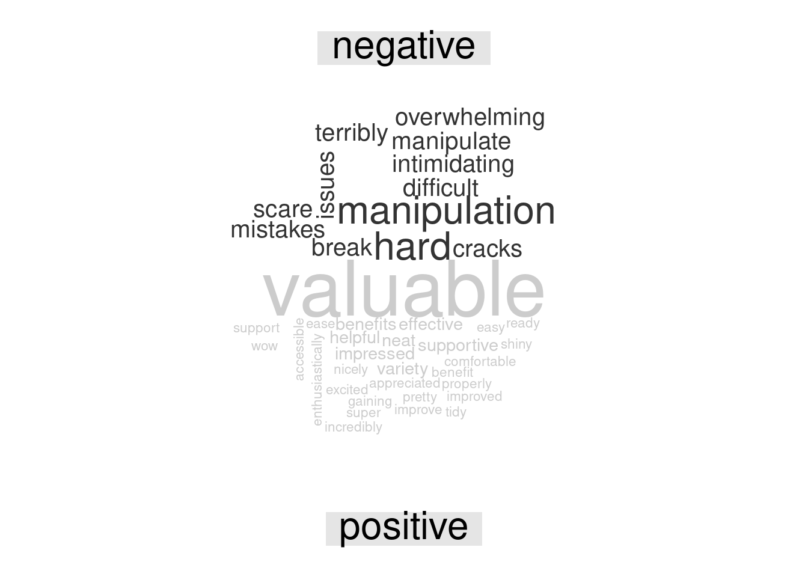
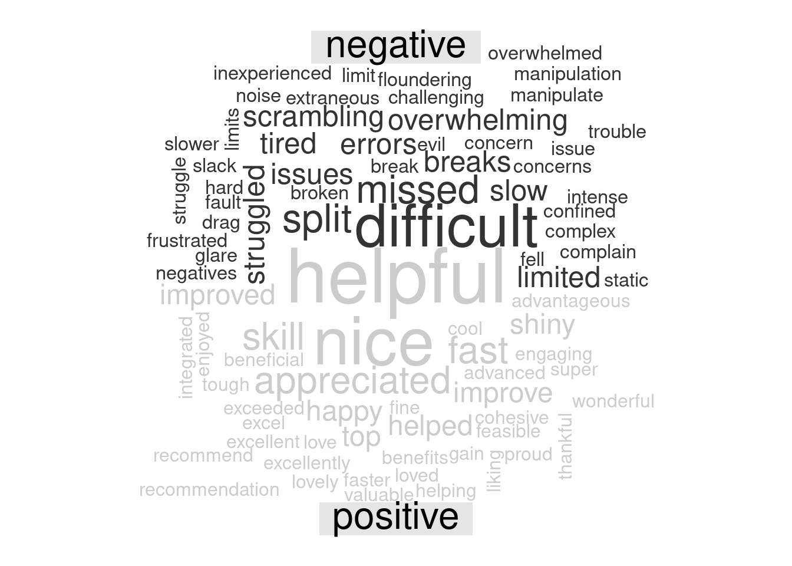

library(dplyr)
library(tibble)
library(readr)
library(tidytext)
library(wordcloud)
library(reshape2)11.0.1 Learning Objectives
- What a token is and how they are used
- How to use stop words
- How to customize stop words
- How to give structure to unstructured text
11.0.2 Introduction
Much of the information covered in this chapter is based on Text Mining with R: A Tidy Approach by Julia Silge and David Robinson. This is a great book if you want to go deeper into text analysis.
Text mining is the process by which unstructured text is transformed into a structured format to prepare it for analysis. This can range from the simple example we show in this lesson, to much more complicated processes such as using OCR (optical character recognition) to scan and extract text from pdfs, or web scraping.
Once text is in a structured format, analysis can be performed on it. The inherent benefit of quantitative text analysis is that it is highly scalable. With the right computational techniques, massive quantities of text can be mined and analyzed many, many orders of magnitude faster than it would take a human to do the same task. The downside, is that human language is inherently nuanced, and computers (as you may have noticed) think very differently than we do. In order for an analysis to capture this nuance, the tools and techniques for text analysis need to be set up with care, especially when the analysis becomes more complex.
There are a number of different types of text analysis. In this lesson we will show some simple examples of two: word frequency, and sentiment analysis.
Setup
First we’ll load the libraries we need for this lesson:
Load the survey data back in using the code chunks below:
survey_raw <- read_csv("https://dev.nceas.ucsb.edu/knb/d1/mn/v2/object/urn%3Auuid%3A71cb8d0d-70d5-4752-abcd-e3bcf7f14783", show_col_types = FALSE)
events <- read_csv("https://dev.nceas.ucsb.edu/knb/d1/mn/v2/object/urn%3Auuid%3A0a1dd2d8-e8db-4089-a176-1b557d6e2786", show_col_types = FALSE)survey_clean <- survey_raw %>%
select(-notes) %>%
mutate(Q1 = if_else(Q1 == "1", "below expectations", Q1)) %>%
mutate(Q2 = tolower(Q2))
survey_joined <- left_join(survey_clean, events, by = "StartDate")We are going to be working in the “tidy text format.” This format stipulates that the text column of our data frame contains rows with only one token per row. A token, in this case, is a meaningful unit of text. Depending on the analysis, that could be a word, two words, or phrase.
First, let’s create a data frame with responses to question 3, with the one token per row. We use the unnest_tokens function from tidytext, after selecting columns of interest.
q3 <- survey_joined %>%
select(StartDate, location, Q3) %>%
unnest_tokens(output = word, input = Q3)You’ll see that we now have a very long data frame with only one word in each row of the text column. Some of the words aren’t so interesting though. The words that are likely not useful for analysis are called “stop words”. There is a list of stop words contained within the tidytext package and we can access it using the data function. We can then use the anti_join function to return only the words that are not in the stop word list.
data(stop_words)
q3 <- anti_join(q3, stop_words)Joining with `by = join_by(word)`Now, we can do normal dplyr analysis to examine the most commonly used words in question 3. The count function is helpful here. We could also do a group_by and summarize and get the same result. We can also arrange the results, and get the top 10 using slice_head.
q3_top <- q3 %>%
count(word) %>%
arrange(-n) %>%
slice_head(n = 10)Term frequency
Right now, our counts of the most commonly used non-stop words are only moderately informative because they don’t take into context how many other words, responses, and courses there are. A widely used metric to analyze and draw conclusions from word frequency, including frequency within documents (or courses, in our case) is called tf-idf. This is the term frequency (number of appearances of a term divided by total number of terms), multiplied by the inverse document frequency (the natural log of the number of documents divided by the number of documents containing the term). The tidytext book has great examples on how to calculate this metric easily using some built in functions to the package.
Let’s do the same workflow for question 4:
q4 <- survey_joined %>%
select(StartDate, location, Q4) %>%
unnest_tokens(output = word, input = Q4) %>%
anti_join(stop_words)Joining with `by = join_by(word)`q4_top <- q4 %>%
count(word) %>%
arrange(-n) %>%
slice_head(n = 10)Perhaps not surprisingly, the word data is mentioned a lot! In this case, it might be useful to add it to our stop words list. You can create a data.frame in place with your word, and an indication of the lexicon (in this case, your own, which we can call custom). Then we use rbind to bind that data frame with our previous stop words data frame.
custom_words <- data.frame(word = "data", lexicon = "custom")
stop_words_full <- rbind(stop_words, custom_words)Now we can run our question 4 analysis again, with the anti_join on our custom list.
q4 <- survey_joined %>%
select(StartDate, location, Q4) %>%
unnest_tokens(output = word, input = Q4) %>%
anti_join(stop_words_full)Joining with `by = join_by(word)`q4_top <- q4 %>%
count(word) %>%
arrange(-n) %>%
slice_head(n = 10)11.1 Unstructured Text
The above example showed how to analyze text that was contained within a tabular format (a csv file). There are many other text formats that you might want to analyze, however. This might include pdf documents, websites, word documents, etc. Here, we’ll look at how to read in the text from a PDF document into an analysis pipeline like above.
Before we begin, it is important to understand that not all PDF documents can be processed this way. PDF files can store information in many ways, including both images and text. Some PDF documents, particularly older ones, or scanned documents, are images of text and the bytes making up the document do not contain a ‘readable’ version of the text in the image, it is an image not unlike one you would take with a camera. Other PDF documents will contain the text as character strings, along with the information on how to render it on the page (such as position and font). The analysis that follows will only work on PDF files that fit the second description of the format. If the PDF document you are trying to analyze is more like the first, you would need to first use a technique called Optical Character Recognition (OCR) to interpret the text in the image and store it in a parsable way. Since this document can be parsed, we’ll proceed without doing OCR.
First we’ll load another library, pdftools, which will read in our PDF, and the stringr library, which helps manipulate character strings.
library(pdftools)
library(stringr)Next, navigate to the dataset Elizabeth Rink and Gitte Adler Reimer. 2022. Population Dynamics in Greenland: A Multi-component Mixed-methods Study of Pregnancy Dynamics in Greenland (2014-2022). Arctic Data Center. doi:10.18739/A21Z41V1R.. Right click the download button next to the top PDF data file called ‘Translation_of_FG_8_Ilulissat_170410_0077.pdf’.
First we create a variable with a path to a location where we want to save the file.
path <- "data/Translation_of_FG_8_Ilulissat_170410_0077.pdf"Then use download.file to download it and save it to that path.
download.file("https://arcticdata.io/metacat/d1/mn/v2/object/urn%3Auuid%3A34999083-2fa1-4222-ab27-53204327e8fc", path)The pdf_text function extracts the text from the PDF file, returning a vector of character strings with a length equal to the number of pages in the file. So, our return value is loaded into R, but maybe not that useful yet because it is just a bunch of really long strings.
txt <- pdf_text(path)
class(txt)[1] "character"Luckily, there is a function that will turn the pdf text data we just read in to a form that is compatible with the rest of the tidytext tools. The tibble::enframe function, converts the list into a data.frame. We then change one column name to describe what the column actually is (page number).
txt_clean <- txt %>%
enframe() %>%
rename(page = name) We can do the same analysis as above, unnesting the tokens and removing stop words to get the most frequent words:
pdf_summary <- txt_clean %>%
unnest_tokens(output = word, input = value) %>%
anti_join(stop_words) %>%
count(word) %>%
arrange(-n) %>%
slice_head(n = 10)Joining with `by = join_by(word)`If we look at the result, and then back at the original document, it is clear that there is more work needed to get the data to an analyzable state. The header and footer of each page of the PDF were included in the text we analyzed, and since they are repeated every page (and aren’t really the subject of our inquiry anyway), should be removed from the text after we read it into R but before we try to calculate the most used words. It might also be beneficial to try and separate out the questions from responses, if we wanted to analyze just the responses or just the questions.
To help us clean things up, first let’s split our value column currently containing full pages of text by where there are double newlines (\n\n). You can see in the original PDF how this demarcates the responses, which contain single newlines within each paragraph, and two new lines (an empty line) between paragraphs. You can see an example of this within the text we have read in by examining just the first 500 characters of the first page of data.
substr(txt_clean$value[1], 1,500)[1] " Population Dynamics in Greenland\n Focus Group Meetings\n\nDate of the focus group meeting: Ilulissat April 10th, 2017\nName and title of the Researchers: Q3: Dr. Elizabeth Rink & Q1: Dr. Gitte Adler\nReimer\nName of the facilitator: Q2: Majbritt Didriksen Raal\nRecord No.: 170410_0077\n\nFG # 8\n\nQ2: Ilulissat the April 10th, 2017, we are going to talk to the Professional Group.\n\nQ1: Welcome, we are working on the final part of t"To split our character vectors, we will use the str_split function. It splits a character vector according to a separator, and stores the values in a list. To show more clearly, let’s look at a dummy example. We can split a string of comma separated numbers into a list with each individual number.
x <- "1,2,3,4,5"
str_split(x, ",")[[1]]
[1] "1" "2" "3" "4" "5"In the real dataset, we’ll use str_split and mutate, which will create a list of values within each row of the value column. So each cell in the value column contains a list of values like the result of the example above. We can “flatten” this data so that each cell only has one value by using the unnest function, which takes as arguments the columns to flatten. Let’s take the example above, and make it a little more like our real data.
First turn the original dummy vector into a data frame, and do our split as before, this time using mutate.
x_df <- data.frame(x = x) %>%
mutate(x = str_split(x, ","))
x_df x
1 1, 2, 3, 4, 5Then you can run the unnest on the column of split values we just created.
x_df_flat <- x_df %>%
tidyr::unnest(cols = x)
x_df_flat# A tibble: 5 × 1
x
<chr>
1 1
2 2
3 3
4 4
5 5 Now that we know how this works, let’s do it on our dataset with the double newline character as the separator.
txt_clean <- txt_clean %>%
mutate(value = str_split(value, "\n\n")) %>%
tidyr::unnest(cols = value)DT::datatable(txt_clean, rownames = F)You can see that our questions and answers are now easily visible because they all start with wither Q or A. The other lines are blank lines or header/footer lines from the document. So, let’s extract the first few characters of each line into a new column using substr, with the goal that we’ll run a filter for rows that start with Q or A, thus discarding all the other rows.
First, we extract the first 4 characters of each row and using mutate create a new column with those values called id.
txt_clean <- txt_clean %>%
mutate(id = substr(value, 1, 4))Let’s have a look at the unique values there:
unique(txt_clean$id) [1] " " "Date" "FG #" "Q2: " "Q1: " "A1: " "PDG " "A2: " "\nQ2:"
[10] "\nQ2." "\nPDG" "" "A1 " "Q3: " So unfortunately some of the text is a tiny bit garbled, there are newlines before at least some Q and A ids. We can use mutate again with str_replace to replace those \n with a blank value, which will remove them.
txt_clean <- txt_clean %>%
mutate(id = substr(value, 1, 4)) %>%
mutate(id = str_replace(id, "\n", ""))unique(txt_clean$id) [1] " " "Date" "FG #" "Q2: " "Q1: " "A1: " "PDG " "A2: " "Q2:" "Q2."
[11] "PDG" "" "A1 " "Q3: "Now we will use substr again to get the first two characters of each id.
txt_clean <- txt_clean %>%
mutate(id = substr(value, 1, 4)) %>%
mutate(id = str_replace(id, "\n", "")) %>%
mutate(id = substr(id, 1, 2))unique(txt_clean$id) [1] " " "Da" "FG" "Q2" "Q1" "A1" "PD" "A2" "" "Q3"Finally, we can run the filter. Here, we filter for id values that start with either a Q or an A using the grepl function and a regular expression. We won’t go much into regular expression details, but there is a chapter in the appendix for more about how they work.
Here is an example of grepl in action. It returns a true or false for whether the value of x starts with (signified by ^) a Q or A (signified by QA in square brackets).
x <- c("Q3", "F1", "AAA", "FA")
grepl("^[QA]", x)[1] TRUE FALSE TRUE FALSESo let’s run that within a filter which will return only rows where the grepl would return TRUE.
txt_clean <- txt_clean %>%
mutate(id = substr(value, 1, 4)) %>%
mutate(id = str_replace(id, "\n", "")) %>%
mutate(id = substr(id, 1, 2)) %>%
filter(grepl("^[QA]", id))Finally, as our last cleaning step we replace all instances of the start of a string that contains a Q or A, followed by a digit and a colon, with an empty string (removing them from the beginning of the line.
txt_clean <- txt_clean %>%
mutate(id = substr(value, 1, 4)) %>%
mutate(id = str_replace(id, "\n", "")) %>%
mutate(id = substr(id, 1, 2)) %>%
filter(grepl("^[QA]", id)) %>%
mutate(value = str_replace_all(value, "[QA][0-9]\\:", ""))Finally, we can try the same analysis again as above to look for the most commonly used words.
pdf_summary <- txt_clean %>%
unnest_tokens(output = word, input = value) %>%
anti_join(stop_words) %>%
count(word) %>%
arrange(-n) %>%
slice_head(n = 10)Joining with `by = join_by(word)`11.2 Sentiment Analysis
In sentiment analysis, tokens (in this case our single words) are evaluated against a dictionary of words where a sentiment is assigned to the word. There are many different sentiment lexicons, some with single words, some with more than one word, and some that are aimed at particular disciplines. When embarking on a sentiment analysis project, choosing your lexicon is one that should be done with care. Sentiment analysis can also be done using machine learning algorithms.
With that in mind, we will next do a very simple sentiment analysis on our Q3 and Q4 answers using the bing lexicon from Bing Liu and collaborators, which ships with the tidytext package.
First we will use the get_sentiments function to load the lexicon.
bing <- get_sentiments("bing")Next we do an inner join to return the words from question 3 that are contained within the lexicon.
q3_sent <- inner_join(q3, bing, by = "word")There are a variety of directions you could go from here, analysis wise, such as calculating an overall sentiment index for that question, plotting sentiment against some other variable, or, making a fun word cloud like below! Here we bring in reshape2::acast to create a sentiment matrix for each word, and pass that into wordcloud::comparison.cloud to look at a wordcloud that indicates the frequency and sentiment of the words in our responses.
q3_sent %>%
count(word, sentiment, sort = TRUE) %>%
acast(word ~ sentiment, value.var = "n", fill = 0) %>%
comparison.cloud(colors = c("gray20", "gray80"),
max.words = 100, title.size = 2)
Let’s look at the question 4 word cloud:
q4 %>%
inner_join(bing, by = "word") %>%
count(word, sentiment, sort = TRUE) %>%
acast(word ~ sentiment, value.var = "n", fill = 0) %>%
comparison.cloud(colors = c("gray20", "gray80"),
max.words = 100, title.size = 2)
11.3 Summary
In this lesson, we learned:
- how to analyze structured text data from a survey using stop words and sentiment analysis
- how to give structure to unstructured text data from a PDF to do some analysis using stop words and times words are used